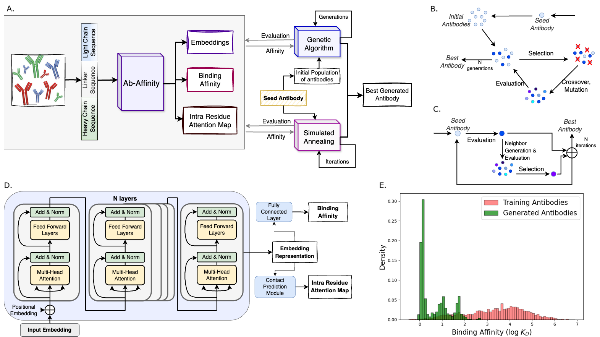

Antibody Affinity Prediction and Optimize
Research Title: A Large Language Model Guides the Affinity Maturation of Variant Antibodies Generated by Combinatorial Optimization
In the paper, We have developed Ab-Affinity, a large language model that can predict the binding affinity of antibodies against the SARS-CoV-2 spike protein.
Synthetic antibodies were generated using combinatorial optimization and Ab-Affinity, and we were able to generate new antibodies with > 160 fold binding improvement.
- Ab-Affinity demonstrated stronger predictive performance than those generated by previously published methods: DG-Affinity, ESM-2, and AbLang.
The t-SNE visualization of Ab-Affinity’s embeddings suggested that it captured the relationships between antibody sequences and binding affinities
to the target antigen.
-
Ab-Affinity’s embeddings enabled a strong performance on several classification tasks (binding activity, and binding improvement prediction),
emphasizing the utility of our model beyond just affinity prediction.
-
The residue-residue attention maps extracted from Ab-Affinity reveal that our model focuses on the CDRs and/or the immediately neighboring regions of the antibodies.
The disparities in the residue-residue attention maps highlight Ab-Affinity’s proficiency in distinguishing between strong and weak binders.
-
Molecular docking of our synthetic antibodies with the target peptide demonstrated that the synthetic antibodies had enhanced interactions with the target peptide
and formed more stable complexes compared to the seed antibody.
